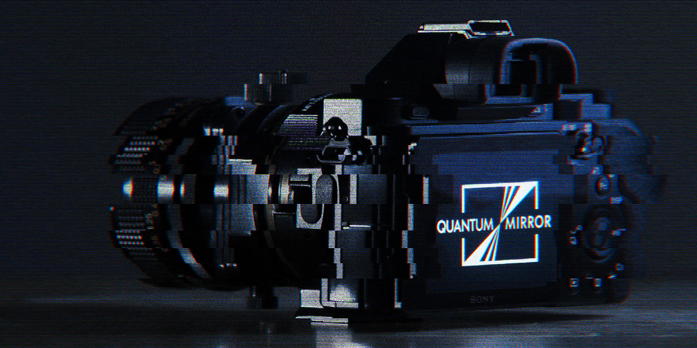
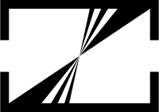

Quantum Mirror  Sample Gallery
Created by Nicholas Sherlock and DALL·E 2 by OpenAI
Quantum Mirror is an app I created for Sony mirrorless cameras that allows me to use my camera to peer into parallel universes.
My photos are sent to the DALL·E AI as I take them, which dreams up new versions of them, revealing a world-that-might-have-been.
Join me on a photowalk through an alternate-reality version of Dunedin, New Zealand.
Sony A7R + Canon FD 35mm TS SSC / Laowa 85mm Macro